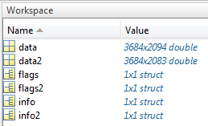
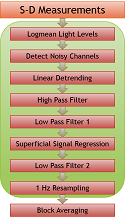

NeuroDOT 2.2.0 Tutorial - Preprocessing Pipeline

Welcome to NeuroDOT 2.2.0 Base Edition!


In the "hearing words" (HW) paradigm, which we will use in this tutorial, a patient quietly listens to auditory stimulus presented through speakers.

The stimulus is divided into six 30-second blocks (cyan lines on bottom-right), with one spoken word per s for 15 s, followed by 15 s of silence (0 words per s).

These blocks are averaged together and reconstructed into a 3D time series map (a movie) of brain function.
This tutorial focuses on the first stage of our research scenario: preprocessing.
Preprocessing involves using a number of digital signal processing and analysis techniques to remove interfering or systemic signals, and isolate the brain activity responses to stimuli (such as the Hearing Words experiment).
We will assess data quality at every step along the way to ensure that we are acquiring high-quality maps of brain activity.
You will be given syntax prompts along the way. Copy and type these into the MATLAB command line, or highlight them and either press F9 or right-click and select "Evaluate Selection" on the pop-up menu.
If you are unfamiliar with NeuroDOT and its data structures at any point, please refer to the Overview Tutorial and User Manual. Also, the List of Files and Functions provides easy reference to all other help documentation.
Contents
Sample Data
First, if you haven't already, you need to unzip the NeuroDOT 2.2.0 Base Edition file in your chosen directory and install it on the MATLAB search path: addpath(genpath('your_NeuroDOT_directory_here'))
Next, we need to load up our sample data. There are two sets, one of high quality that has been presented in published papers, and another "noisy" set that was chosen to contrast against the first.
load('NeuroDOT_Base_HW_Sample_1.mat') load('NeuroDOT_Base_HW_Sample_Noisy.mat')
In the workspace, HW Sample 1 is associated with data, info, and flags, while HW Sample Noisy is associated with data2, info2, and flags2.

Now, let's take a look at the full Preprocessing Pipeline diagram again:

S-D Measurements
We'll work first from the raw source-detector pair measurements in data.
1. Since data is a 2D array (MEASUREMENTS x TIME), let’s display it as a grayscale image, and add a color bar while we’re at it:
imagesc(data) colormap(gray) colorbar
2. The resulting image is very dark, so let’s rescale the color axis:
caxis([-0.03, 0.03])
Step 3. Now let's add some labels:
xlabel('samples') ylabel('measurements')

Each horizontal line of this gray plot represents a S-D pair, or channel.
We can visualize this same information with plot, which we call the "time traces" of each channel.
1. Create a new figure and plot the data:
figure plot(data')
2. Calculate x-axis limits from the array’s size:
[Nm, Nt] = size(data); xlim([0, Nt+1])
3. Label the axes:
xlabel('samples') ylabel('light level')

If we use MATLAB's magnification tool to zoom in, we can see the signal in more detail. Each line is a single channel's time trace. The fast, periodic, "jaggy" spikes we see are the heart pulse signal. The slower, periodic, sinusoid-like peaks are the respiration signal.

The mean value of each channel is relatively consistent, but the channels are spread across several orders of magnitude. We see this in traces bunched at the bottom.
We can alleviate this bunching with a semilogy plot.
1. Create a new figure and plot the data with axis limits and labels as before:
figure semilogy(data') xlim([0, Nt+1]) xlabel('samples') ylabel('light level')

Another improvement we can make is to convert from samples to time.
Step 1. Calculate the time length of each sample:
dt = 1 / info.system.framerate;
Step 2. Replot and relabel.
figure semilogy([1:Nt] .* dt, data') xlim([0, (Nt+1) * dt]) xlabel('seconds') ylabel('light level')

Zooming in again shows the time traces spread more evenly among the orders of magnitude.

There is a characteristic log-linear relationship between S-D distance and mean light level for light diffusion in biological tissue. Let's explore that by plotting it!
Step 1. Create a new figure and plot channel means versus S-D distance:
figure
semilogy(info.pairs.r2d, mean(data, 2), '*')
Step 2. Let's label the axes, noting their units:
xlabel('Distance [mm]') ylabel('Detector Voltage [V]')

Why do the channels all line up vertically in the same 5 distance bands? They represent groups of nearest neighbor pairs on a 3D cap. In this data, the first through fifth nearest neighbors were measured. We can visualize the differences in mean light levels between NN groups with info.pairs.NN.
Step 1. Create a new figure and plot time traces for each of the NN1 and NN2 groups:
figure semilogy(data(info.pairs.NN == 1, :)') xlim([0, Nt+1]); xlabel('samples'); ylabel('light level'); title('NN1') figure semilogy(data(info.pairs.NN == 2, :)') xlim([0, Nt+1]); xlabel('samples'); ylabel('light level'); title('NN2')

NeuroDOT's visualization functions can automatically separate these plots by wavelength and NN number.
For gray plots:
params.Nnns = 1; params.Nwls = 2; PlotGray(data, info, params)

where the structure params passes visualization parameters on to the function.
For semilogy time traces:
PlotAllMeasTTs(data, info, params)
where again the last input selects NN pair(s).
Step 3. For mean light-levels vs. S-D distance:
PlotLLFalloff(data, info)

The params structure is omitted here to allow PlotLLFalloff's defaults to display all NN's and WL's.
To learn more about the params structure, please consult the User Manual or the "params Usage" appendix at the end of the Overview tutorial.
Let's run these same visualizations for the Noisy data set:
PlotGray(data2, info2, params) PlotAllMeasTTs(data2, info2, params) PlotLLFalloff(data2, info2)
Here are the gray plots side by side, on the same color scale. Notice the lower signal intensities in the middle of the noisy data - this roughly corresponds to the middle of the cap.

Here are the all-measurements time traces. Again, the mean signal levels in the noisy data are much lower.

And here is the light level (LL) falloff. The higher NN's lose their log-linearity in the noisy data, indicating bad cap fit.

Let's visualize the cap's topography now.
1. We will visualize each source and detector as a square, initialized here:
l = norm(info.optodes.spos2(1,:) - info.optodes.spos2(2,:)) / 2; sqx = [l 0 -l 0]; sqy = [0 -l 0 l];
Step 2. We'll create a figure large enough to house this visualization:
figure('Position', [20, 200, 1240, 420])
Step 3. Calculate source and detector numbers.
Ns = length(unique(info.pairs.Src)); Nd = length(unique(info.pairs.Det));
Step 4. Now, we'll loop through sources (in light red) and give them number labels:
for s = 1:Ns patch(info.optodes.spos2(s,1) + sqx, info.optodes.spos2(s,2) + sqy, [1 .75 .75]) text(info.optodes.spos2(s,1), info.optodes.spos2(s,2), num2str(s)) end
Step 5. And detectors (in light blue) with their own labels:
for d = 1:Nd patch(info.optodes.dpos2(d,1) + sqx, info.optodes.dpos2(d,2) + sqy, [.55 .55 1]) text(info.optodes.dpos2(d,1), info.optodes.dpos2(d,2), num2str(d)) end
Step 6. And last, to pretty it up, we'll remove and resize the axes.
axis off axis image
(tip: Some users may want to maximize the figure window as well)

Another plot we can make is the mean LL's of each optode on the cap.
Step 1. Let's average each source's measurements for NN1 and WL2.
for s = 1:Ns keep = (info.pairs.Src == s) & (info.pairs.NN == 1) & (info.pairs.WL == 2); savg(s) = real(0.25 * (99 * log10(mean(data(keep))) + 301)); end
Step 2. Let's do the same for detectors:
for d = 1:Nd keep = (info.pairs.Det == d) & (info.pairs.NN == 1) & (info.pairs.WL == 2); davg(d) = real(0.25 * (99 * log10(mean(data(keep))) + 301)); end
Step 3. We can use these to color in the same squares as before. But first we need to apply a colormap:
M = max([savg(:); davg(:)]); cmap = hot(1000); savg = cmap(round((savg ./ M) .* (999) + 1), :); davg = cmap(round((davg ./ M) .* (999) + 1), :);
Step 4. Now to plot. Sources first:
figure('Position', [20, 200, 1240, 420]) for s = 1:Ns patch(info.optodes.spos2(s,1) + sqx, info.optodes.spos2(s,2) + sqy, savg(s, :)); end
Step 5. Detectors next:
for d = 1:Nd patch(info.optodes.dpos2(d,1) + sqx, info.optodes.dpos2(d,2) + sqy, davg(d, :)); end
Step 6. Remove and resize the axes again. We'll add a title while we're at it, too:
axis off axis image title('Cap Mean Light Levels')

Now we have a beautiful mapping of mean light levels onto the cap!
Let's also not forget to clear some variables.
clear cmap d davg dt keep l M s savg sqx sqy
Here are the NeuroDOT functions for these visualizations.
PlotCap(info, params) PlotCapMeanLL(data, info, params)

Let's also plot the Cap Mean LL's for NN2, WL2. We'll scale the two plots to the same value to see how they correspond to the LL Falloff plots:
params2 = params; params2.climits = [9.2e-1 9.2e1]; params2.Nnns = 2; PlotCapMeanLL(data, info, params2)

Now let's compare this to the Noisy data, for NN1:
params2.Nnns = 1; PlotCapMeanLL(data2, info2, params2)

These functions also support 3D rendering:
params2.dimension = '3D';
params2.climits = [];
PlotCap(info, params2)
PlotCapMeanLL(data, info, params2)

NeuroDOT's 3D visualizations enable you to inspect the plot from any angle. Try it now by clicking anywhere on the cap and dragging it around!
Logmean Light Levels
The first preprocessing step is derived from a linear Rytov approximation, where the change in light absorption at the scalp  can be approximated by the negative log of the measured light levels
can be approximated by the negative log of the measured light levels  divided by a baseline light level
divided by a baseline light level  (taken as the mean of the entire time trace, or
(taken as the mean of the entire time trace, or  ).
).
This approximation,  , only applies when
, only applies when  ?_0 ? ??.
?_0 ? ??.
Step 1. Let's do the logmean:
normed = bsxfun(@rdivide, data, mean(data, 2)); logmeaned = -log(normed);
Step 2. And then visualize it:
PlotAllMeasTTs(logmeaned, info, params) PlotGray(logmeaned, info, params)

As you may suspect, NeuroDOT also has a logmean function.
Step 1. Use this function to generate logmean data:
lmdata = logmean(data);
We can't tell much from the time traces besides that the signal variance has been greatly amplified over that of the raw data. The gray plot shows the effect much better, though. Here we can clearly see significant, periodic patterns in the signal.
Showing these side-by-side with the raw data visualizations gives us an even better idea.

Next, let's try to clean up these logmean'ed time traces by averaging all channels together.
Step 1. Average the channels of NN2, WL1 together:
keep = lmdata(info.pairs.NN == 2 & info.pairs.WL == 1, :); meankeep = mean(keep);
Step 2. Create a new figure and plot with axis limits:
figure plot(meankeep) [Nm, Nt] = size(data); xlim([0, Nt+1]) xlabel('samples'); ylabel('light level')

Step 1. NeuroDOT has a function for this as well:
PlotMeanTTs(lmdata, info, params)
This can be a useful plot for seeing the action of each step on global signal levels.

And let's clear up some variables again:
clear logmeaned normed keep meankeep %
Detect Noisy Channels
The next step is detecting noisy channels. Channels that exhibit noise above a certain threshold tend to be less reliable, so we want a way to eliminate them from consideration.
The best threshold for ORL systems has been determined to be 0.075.
We will store this information in an "on-the-fly" table called info.MEAS.
Step 1. Calculate noise as the standard deviation of each channel:
STD = std(lmdata, [], 2);
Step 2. Threshold the data (GI stands for Good Indices):
GI = STD <= 0.075;
Step 3. Store it all in a new table.
info.MEAS = table(STD, GI, 'VariableNames', {'noise', 'GI'});
Now that we've got these good measurements, how can we visualize them? Let's start by creating a cap plot, and marking good measurements with green lines. Step 1. Find indices of the good measurements:
figure
hold on
keep = find(info.MEAS.GI == 1);
Step 2. Plot the good measurements:
for m = keep' plot([info.optodes.spos2(info.pairs.Src(m), 1); info.optodes.dpos2(info.pairs.Det(m), 1)], [info.optodes.spos2(info.pairs.Src(m), 2); info.optodes.dpos2(info.pairs.Det(m), 2)], 'g') end
Step 3. Plot source numbers (in light blue):
for s = 1:Ns text(info.optodes.spos2(s, 1), info.optodes.spos2(s, 2), num2str(s), 'Color', [1 .75 .75]) end
Step 4. Plot detector numbers:
for d = 1:Nd text(info.optodes.dpos2(d, 1), info.optodes.dpos2(d, 2), num2str(d), 'Color', [.55 .55 1]) end
Step 5. And one more time, remove and resize the axes.
axis off axis image

As before, there are corresponding NeuroDOT 2 functions for each of these:
info = FindGoodMeas(lmdata, info, 0.075); PlotCapGoodMeas(info)
And there is a 3D version of the visualization:
params2.Nnns = []; PlotCapGoodMeas(info, params2)
{kind=link}
There is one more way to visualize the data, by plotting a histogram of the channels by their noise level.
Step 1. Set number of bins:
bins = [0:0.5:100];
Step 2. Keep noise for NN2, WL1:
keep = info.pairs.WL == 1 & info.pairs.NN == 2; STD = info.MEAS.STD(keep)*100;
Step 3. Plot histogram and adjust limits.
figure histogram(STD, bins) ylim([0 200]) xlim([0 50]) ylabel('Variance (%)') xlabel('# Measurements')

And again, let's clear some variables:
clear bins GI STD keep noise m d s % The NeuroDOT function for this is: PlotNoiseHistogram(info, params, 0.075)

Linear Detrending
The next step is an easy one! Linear detrending is largely self-explanatory: it removes the linear component of the signal, flattening out long-term drift. This is a largely optional step, but still a part of the toolbox.
Step 1. We can use MATLAB's detrend function on the transpose of data, and take the transpose of that:
ddata = detrend(lmdata')';
Step 2. Let's see what this looks like in the mean time traces:
PlotMeanTTs(lmdata, info, params) PlotMeanTTs(ddata, info, params)
As we see from the red lines, the detrended data clearly shows the removal of a gradual down-slope in the original data.

The NeuroDOT 2 function for this step is:
ddata = detrend_tts(lmdata);
High Pass Filter
The next step is a high pass filter (HPF). The cutoff frequency we use for this is 0.02 Hz. The typical block length is 50-60 s, and 1/50 s = 0.02 Hz. Thus, the HPF removes long term signal drift between blocks. We will also need the framerate, which is stored in info.system.framerate and has a value of 10.0005 Hz. The filtering requires several steps.
Step 1. First, let's pad lmdata by 100 in the TIME dimension to reduce edge effects:
padded = padarray(ddata, [0 100]);
Step 2. Next, we calculate the Nyquist frequency:
omegaNy = 0.02 * (2 / info.system.framerate);
Step 3. Then, we generate a 5-pole Butterworth highpass filter:
[b, a] = butter(5, omegaNy, 'high');
Step 4. We apply the filter forwards and backwards to each channel's time series:
for n = 1:size(padded, 1), hpdata(n, :) = filtfilt(b, a, padded(n,:)); end
Step 5. Remove the padding:
hpdata = hpdata(:, 101:end-100);
Step 6. Lastly, we visualize the gray plot and mean time trace:
PlotGray(hpdata, info, params) PlotMeanTTs(hpdata, info, params)

Another way we can visualize the HPF is with a mean power spectrum. To do this, we need to calculate a discrete Fourier Transform with MATLAB's fft function, but it needs to be done in a specific way.
Step 1. First, take the mean of NN2, WL1 channels for the logmean & HPF:
keep = (info.pairs.NN == 2) & (info.pairs.WL == 1); lmkeep = mean(lmdata(keep, :)); hpkeep = mean(hpdata(keep, :));
Step 2. Next, we need to zero pack to the next power of two in the time dimension (this improves calculation speed):
[Nm, Nt] = size(lmkeep); Ndft = pow2(nextpow2(Nt));
Step 3. Then, we define the positive half of the frequency domain:
Nf = 1 + Ndft/2; ftdomain = (info.system.framerate/2) * linspace(0, 1, Nf);
Step 4. We strip out the 'DC' component, which is simply the mean light levels from before:
lmkeep = bsxfun(@minus, lmkeep, mean(lmkeep, 2)); hpkeep = bsxfun(@minus, hpkeep, mean(hpkeep, 2));
Step 5. Now we can take the Fourier transform (normalized by the full frequency domain size) and keep the positive frequency domain:
lmmag = fft(lmkeep) / Ndft; lmmag = lmmag(:, 1:Nf); hpmag = fft(hpkeep) / Ndft; hpmag = hpmag(:, 1:Nf);
Step 6. lmmag and hpmag are magnitude ' what we really need is power, the absolute value of magnitude squared:
lmpower = abs(lmmag) .* 2; hppower = abs(hpmag) .* 2;
We're almost done!
Step 7. Last, we plot the power on a semilogx graph with some appropriate labels:
figure semilogx(ftdomain, lmpower) ylabel('Power [W]') xlabel('Frequency [Hz]') title('Logmean data') figure semilogx(ftdomain, hppower) ylabel('Power [W]') xlabel('Frequency [Hz]') title('HPF data')

And of course, NeuroDOT has several functions that can automate these more complex tasks and standardize formatting.
Step 1. Here is the HPF function, with the last two inputs being the cutoff frequency and frame rate:
hpdata = highpass(lmdata, 0.02, info.system.framerate);
Step 2. And here are corresponding functions to plot the mean and all-measurements power spectra:
PlotMeanPS(hpdata, info, info.system.framerate, params) PlotAllMeasPS(hpdata, info, info.system.framerate, params)
Clearing excess variables:
clear a b ftdomain hpkeep hpmag hppower keep lmkeep lmmag lmpower n Ndft Nf omegaNy padded

Here are the logmean (left) and HPF (right) power spectra. We see quite starkly that % the lower frequency components' power is reduced below 0.02 Hz.

Low Pass Filter 1
The next step is a low pass filter (LPF1) at 1 Hz. This is because we typically downsample to a 1 Hz sampling frequency after preprocessing (not featured in this pipeline), so any signals above 1 Hz are irrelevant.
Step 1. In case you had trouble, here is the syntax for the filter:
lp1data = lowpass(hpdata, 1, info.system.framerate);
Step 2. And for the visualization:
PlotMeanPS(lp1data, info, info.system.framerate, params)

Here are HPF (left) and LPF1 (right) side-by-side for comparison. You can adjust axes limits, or alternatively use the windows' zoom tool, to better see the filtered domains. There is a small peak near 2 Hz that we can see disappear after LPF1.

Superficial Signal Regression
Next is the Superficial Signal Regression step, or SSR. This removes the 'systemic signal', or hemodynamics, which originates from the blood vessels of the scalp. NN1 are the shallowest measurements, so they are the most direct measure of hemodynamics.
Step 1. First, we get the hemodynamics signal by averaging NN1 for each wavelength:
for wl = 1:2 keep = lp1data(info.pairs.NN == 1 & info.pairs.WL == wl & info.MEAS.GI == 1, :); hem(wl, :) = mean(keep); end
Step 2. Then, we use the pseudoinverse of hem to regress it out of lp1data:
for wl = 1:2 keep = info.pairs.WL == wl; temp = lp1data(keep, :)'; g = hem(wl, :)'; gp = pinv(g); beta = gp * temp; SSRdata(keep, :) = (temp - g * beta)'; end
Let's see what's going on here by visualizing both NN1 and NN2 from before and after.
Step 1. Starting with gray plots, we can edit params to show both NN's:
params.Nnns = 1:2; PlotGray(lp1data, info, params) PlotGray(SSRdata, info, params)

Any range of NN's (3:5, 2:3) can be specified in this way. In the plots (LPF1 left, SSR right) we can see NN1 has been filtered out, while NN2 is largely intact.
Step 2. Let's also look at the power spectra:
PlotMeanPS(lp1data, info, info.system.framerate, params) params.ylimits = [0 5e-8]; PlotMeanPS(SSRdata, info, info.system.framerate, params)
The new ylimit is introduced to make the data more visible. Let's make sure to clear it afterward so it doesn't affect our other visualizations!
params.ylimits = []; params.Nnns = 2;

Here it is much clearer that the NN1 signal (top) has dropped substantially (LPF1 left, SSR right) while the NN2 signal remains (bottom).
Again, the SSR operation is done more succinctly in two NeuroDOT functions, gethem and regcorr:
hem = gethem(lp1data, info); [SSRdata, R] = regcorr(lp1data, info, hem);
R is a residuals matrix. Run these commands, and compare their results using the tools you have learned thus far. (Hint: It may be helpful to change variable names to SSRdata1 and SSRdata2, and use nnz(SSRdata2 - SSRdata1) to see if there have been any errors in calculation).
Finally, let's clear some excess variables again:
clear beta g gp keep wl temp %
Low Pass Filter 2
The penultimate step is a second lowpass filter, this time at a lower cutoff frequency of 0.5 Hz. This removes the cardiac pulse from the signal, and uses the same NeuroDOT function, lowpass, as before.
Step 1. Apply a LPF at 0.5 Hz:
lp2data = lowpass(SSRdata, 0.5, info.system.framerate);
Step 2. Plot the mean power spectrum (adjusting the y limits down again):
params.ylimits = [0 2.5e-7]; params.Nnns = 1:2; PlotMeanPS(lp2data, info, info.system.framerate, params) params.ylimits = []; params.Nnns = 2;

Here is a side-by-side of the SSR (left) and LPF2 (right) mean power spectra. Again we see small peaks that have been filtered out.

1 Hz Resampling
The last preprocessing step is to resample the data from ~10 Hz to 1 Hz. We do this because the range of hemodynamic signals is far below 1 Hz, and thus functional neuroimaging is typically done on a 1 Hz time scale. This also has the benefit of reducing data storage requirements, eliminating noise, and providing a benchmark frequency to standardize all stimulus and data acquisitions and analysis to.
Step 1. We first set the resampling frequency and our current framerate:
signal = lp2data; [Nm, Nt] = size(signal); omega_resample = 1; framerate = 10.0005;
Step 2. Next, we establish a resampling ratio to within a desired tolerance using the rat function:
tol = 1e-5; [N, D] = rat(omega_resample / framerate, tol);
Step 3. Now we need to remove the linear component of the data. We could do this with detrend_tts, but unfortunately we have to reverse this operation later, and thus must save this component:
alpha1 = repmat((signal(:, 1) - signal(:, end)) / (Nt-1), 1, Nt); beta = repmat(-signal(:, 1), 1, Nt); tgv = repmat([0:Nt-1]', 1, Nm)'; corrsig = signal + alpha1 .* tgv + beta;
Step 4. Resample the corrected signal:
rawresamp = resample(corrsig', N, D)';
Step 5. Here is where we add the linear component back in, and output it as rdata:
[Nm, Nt] = size(rawresamp); beta = repmat(-signal(:, 1), 1, Nt); tgv = repmat([0:Nt-1]', 1, Nm)'; alpha2 = alpha1(:, 1:Nt) * (D / N); rdata = (rawresamp - alpha2 .* tgv - beta);
Step 6. Last, let's visualize it and compare to the data before resampling:
params.ylimits = [-0.005 0.005]; PlotMeanTTs(lp2data, info, params) PlotMeanTTs(rdata, info, params)

We can see on the Time axis that the data has been resampled from ~2000 time points to ~200 - exactly the ~10x factor that we were looking for!
Let's be sure to clear our y limits:
params.ylimits = [];
And our excess variables:
clear alpha1 alpha2 beta corrsig D framerate N omega_resample rawresamp signal tgv tol
The NeuroDOT 2 function for this is:
[rdata, info] = resample_tts(lp2data, info, info.system.framerate, 1, 1e-5);
Block Averaging
We finally have preprocessed data, with the major interfering signals filtered out, ready for analysis. What's next? The last step is to average the stimulus blocks together. Averaging is a common way to reduce the effect of any remaining systemic noise.
Step 1. First, let's calculate the number of blocks:
Nbl = length(info.paradigm.Pulse_2);
Step 2. Next, let's calculate the block length by subtracting the start times of the first two blocks. The time points for all blocks are found in info.paradigm.synchpts, and info.paradigm.Pulse_2 lists which of those points correspond to stimulus 'on' blocks:
dt = round(mean(diff(info.paradigm.synchpts(info.paradigm.Pulse_2))));
Step 3. Now, we cut the data into blocks:
for m = 1:Nbl blstart = info. paradigm.synchpts(info. paradigm.Pulse_2(m)); blocks(:, :, m) = rdata(:, blstart:blstart + dt - 1); end
Step 4. Last, we average the blocks together:
badata = mean(blocks, 3);
To visualize, let's look at a gray plot:
params.Nwls = 1:2; params.Nnns = 2; PlotGray(badata, info, params)

We see a clear shift in signal intensity at the 15 s mark. We'd also like to see time traces, but due to channel variance, we won't see how light levels change over time in response to the stimulus.
Step 1. So let's subtract the first four seconds' mean from each channel (we call this a deltamean):
dmdata = bsxfun(@minus, badata, mean(badata(:, 1:4), 2));
Step 2. Then let's only keep NN2, WL1, through the good indices:
keep = info.pairs.WL == 1 & info.pairs.NN == 2 & info.MEAS.GI == 1; keep2 = info.pairs.WL == 2 & info.pairs.NN == 2 & info.MEAS.GI == 1;
Step 3. And now let's plot these traces:
figure plot(dmdata(keep, :)') xlim([0, Nt+1]); xlabel('Time (s)') ylabel('Light Levels (uW)'); title('NN2, WL1') figure plot(dmdata(keep2, :)') xlim([0, Nt+1]); xlabel('Time (s)') ylabel('Light Levels (uW)'); title('NN2, WL2')

Alternatively, we can use built-in NeuroDOT functions to execute and visualize block averaging:
badata = BlockAverage(rdata, info); PlotDeltaMean(badata, info, params)

We can see that most channels follow a periodic behavior.
Conclusion
Congratulations! You have finished the NeuroDOT 2 Base Edition Preprocessing Pipeline Tutorial.
For further questions or more information, please consult the NeuroDOT 2 Base User Manual and the various Appendices.
NeuroDOT 2 Support Team:
- Adam Eggebrecht (aeggebre@wustl.edu)
- David Muccigrosso (muccigrosso.david@wustl.edu)
Appendix: Preprocessing
Some notes on the block averaging and LPF1 stages: * Because LPF1 filters out the Nyquist frequency of the downsampling stage (see Neuro Photonics 2014 paper), which is not featured here, it really could be featured at any point in this pipeline after the logmean. The point of LPF1 is to remove all signal components at frequencies higher than the one it will be eventually downsampled to, so that they do not affect any of the other stages of the pipeline, and thus it is placed after the logmean and HPF. * Similarly, block averaging can be done at any point after LPF1. Since the raw data after the logmean is technically in a state that can be feasibly reconstructed, pretty much every step afterwards is just clearing up interfering signals. If a different sort of optical data does not have such signals present, there is little need for further preprocessing.